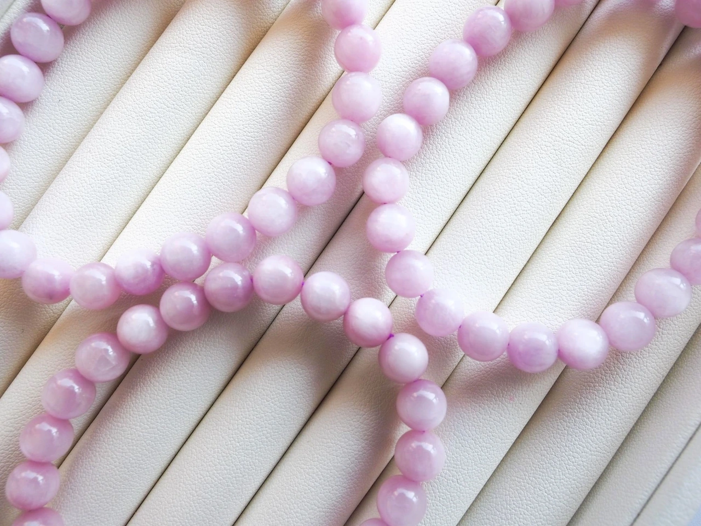

想多認識一點？
挑想看的內容展開，慢慢認識這一種礦石。
阿諾的選物筆記
紫鋰輝的中高品，樣子和價格都差很多。我比較喜歡潤潤的紫鋰輝，顏色溫柔又舒服。現在我會從同一批貨挑 3～15 條，所以照片拍的是整體的樣子，想傳達這個礦物的意境。
保養特別注意
不要長時間曬太陽，顏色照光久了可能變淡。它容易沿著紋理裂開，要避免撞擊和掉落。
小知識
紫鋰輝是鋰輝石的粉紫色品種，硬度約 6.5～7。英文 Kunzite 來自美國礦物學家 George F. Kunz。
整理自阿諾 2026 年 11 月的 Dcard 分享。傳說、寓意為坊間說法，僅供參考，不代表功效。
產地與礦物結構
產地背景
阿富汗、巴西、馬達加斯加與美國加州等地有出產紀錄。
礦物結構與名稱
是鋰輝石的粉紅至紫粉色品種；色彩與微量錳有關，具有解理與多色性。
本頁產地是礦種資料中的產出紀錄，不代表照片中商品已完成產地鑑定；原料產地、加工地與販售地是不同資訊。
能量寓意與日常陪伴
桃花與魅力 · 溫柔關愛
民間常將紫鋰輝石與愛情、魅力和溫柔關愛相連，寄託遇見合適緣分、珍惜彼此的心願。
以上為網路資料中的民間能量說法與文化寓意，僅供介紹參考，不代表科學功效或效果保證。